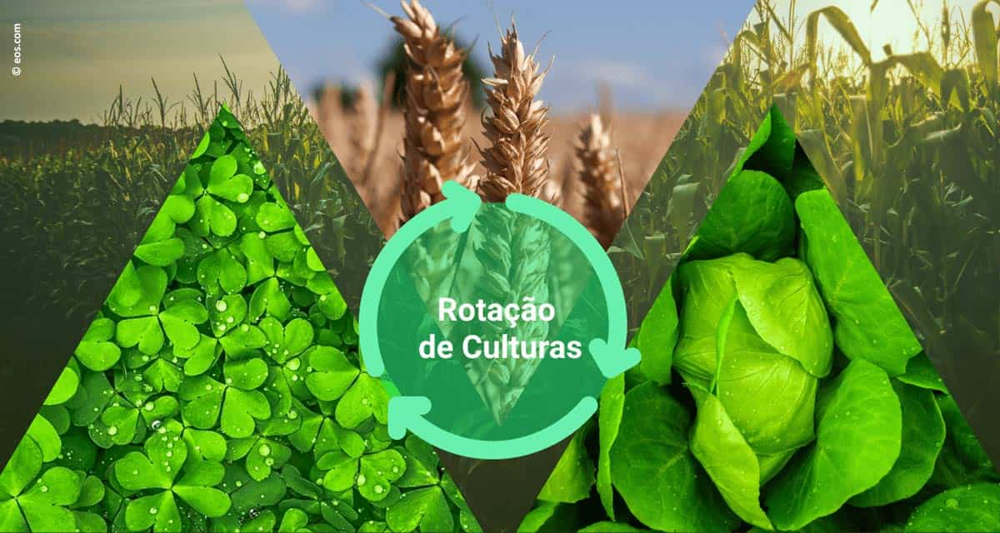
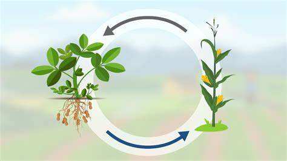
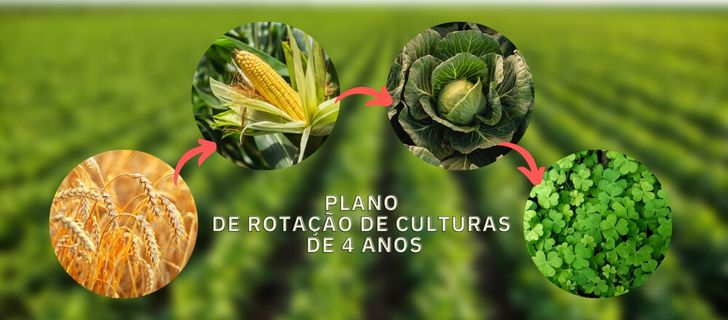

O que é Rotação de Culturas?
A rotação de culturas é uma prática agrícola que consiste em alternar o cultivo de diferentes espécies em uma mesma área, com o objetivo de melhorar a saúde do solo e aumentar a produtividade das culturas.
Benefícios da Rotação de Culturas
- Aumento da produtividade agrícola.
- Redução da incidência de pragas e doenças.
- Melhora da qualidade e fertilidade do solo.
- Diversificação da produção agrícola.
Por que Fazer a Rotação de Culturas?
- Melhoria da Saúde do Solo: Mantém a fertilidade e evita a exaustão de nutrientes.
- Controle de Pragas e Doenças: Reduz a população de pragas e o risco de doenças transmitidas por solo.
- Aumento da Biodiversidade: Promove um ecossistema mais equilibrado e resiliente.
- Redução de Ervas Daninhas: Suprime o crescimento de ervas daninhas.
- Otimização do Uso da Água: Melhora a eficiência no uso da água.
Culturas Comuns para Rotação
| Ano | Cultura | Data de Plantio |
|---|---|---|
| Ano 1 | Milho | Setembro a Outubro |
| Ano 2 | Feijão | Outubro a Novembro |
| Ano 3 | Trigo | Maio a Junho |
| Ano 4 | Batata | Agosto a Setembro |
Práticas de Rotação
Para implementar uma rotação de culturas eficaz, considere as condições climáticas, o tipo de solo e as necessidades nutricionais específicas das culturas.